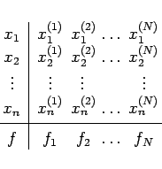
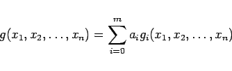
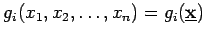
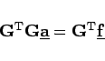
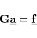

Inhalt Index DeskTop Bronstein

 Numerische Mathematik Approximation, Ausgleichsrechnung, Harmonische Analyse Approximation im Mittel
Numerische Mathematik Approximation, Ausgleichsrechnung, Harmonische Analyse Approximation im Mittel


|  | (19.181) |
Die Schreibweise wird übersichtlicher und die Analogie zur eindimensionalen Ausgleichsaufgabe deutlicher, wenn man folgende Vektoren einführt:
|  | (19.182) |
verwendet. Dabei sind die m+1 Funktionen  geeignet gewählte Ansatzfunktionen.
| Beispiel A |
|
Linearer Ansatz in n Variablen: |
| Beispiel B |
|
Vollständiger quadratischer Ansatz in 3 Variablen: |
|  | (19.183) |
oder das überbestimmte lineare Gleichungssystem
|  | (19.184) |
verwenden.
| Beispiel |
|
Ein Beispiel findet man bei der mehrdimensionalen Regression. |